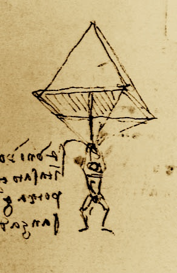

JVM Language Summit — LogisticsAre you visiting the JVM Language Summit from out of town? LocationThe address of the Sun Santa Clara campus is 4220 Network Circle, Santa Clara 95054. Check-in: Please check in at the Clock Tower reception area, at the end of Palm Drive. Badges and escorts to the summit location (the Stanford Conference Room, SCA05-1116) will be available starting at 8:30 AM. Parking: There is some parking in front of the Clock Tower. There is plenty more on the south corner of the Sun campus, between Leonard Stocking Dr.and Network Circle, with a short walk up Palm Dr. to the Clock Tower. TransportationAirports: Sun is approximately 6 miles from the San Jose International Airport (SJC), and 32 miles from the San Francisco International Airport (SFO). Several of the hotels listed have shuttles that can get you at the airport and get you to and from campus, so it should be cost-effective to do without a rental car if you prefer. For those of you unfamiliar with the Bay Area, traffic can be bad, especially at standard commute hours. If you are trying to get back to the airport on Friday evening, please allow additional time. Rapid Transit: For those arriving at SFO who prefer not to rent a car, the BART rapid transit system has a stop at the airport. Take BART one stop to Millbrae, and change at Millbrae to the Caltrain commuter rail, which you can take to the Santa Clara station. Sun is 4 miles from the Santa Clara station. LodgingNote: The following information is based on recent conversations with the hotels, but details are certain to change over time.
|
 |
Communications
Questions? Please send inquiries to inquire@jvmlangsummit.com.
Participants are invited to use the JVM Language Summit wiki to pose technical questions, comments, proposals, etc. There are instructions there for logging in. The wiki has a logistics page for making community notes about travel arrangements.